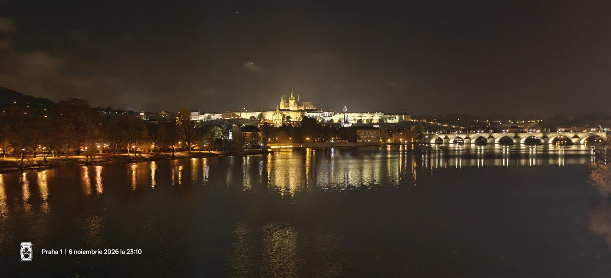

Ai numărat podurile din Praga? Descoperă-le la pas.
Descoperă Europa în weekend. Găsește zboruri pentru o pauză de la rutina zilnică, chiar și fără zile de concediu.
DESTINAȚIE DE WEEKENDPraga · Cehia
Apasă pe poză: te ducem la zboruriZboruri
Caută zboruri →Idei de evadare la weekend din București
Weekenduri din următoarele 2 luni, dus-întors, pentru o persoană.
Evenimente
Toate evenimentele →Weekenduri cu ceva special
Cele mai atractive evenimente din următoarele 2 luni.
Jurnal
Tot jurnalul →Inspirație pentru următoarea plecare
Trasee de urmat în ritmul tău, locuri bune de descoperit și sfaturi practice.

Cehia · Ghid de 2 zile
Praga în 2 zile: poduri, panorame și pauze bune
De la Orașul Vechi la Vyšehrad, două trasee pentru un weekend cu arhitectură, cafea și bere cehească.
Citește ghidul →Orașe vizitate
Câte orașe europene ai vizitat până acum?
Bifează-le pe hartă, urcă de la un nivel de călător la altul și provoacă-te la un quiz rapid cu 10 orașe.